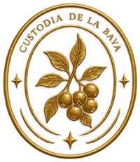
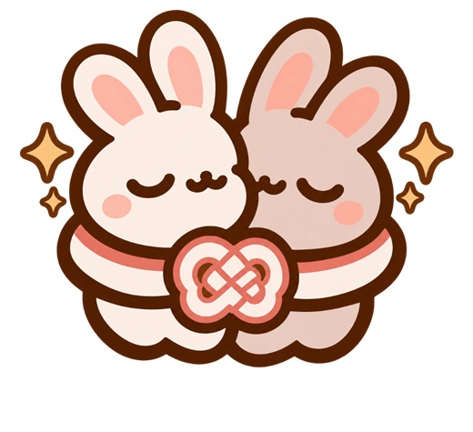

Hola, soy alffer 👋
Cosillas que he ido haciendo
Apps que se me ocurrieron para resolver problemas míos y de la gente que me rodea. Las he diseñado yo y las he construido con IA: yo pongo la idea, el diseño, las decisiones y muchas horas de probar y corregir. La IA escribe el código conmigo.
Belladonna Society
Un club de lectura con estética de orden secreta botánica. Leéis el mismo libro dentro de la app y dejáis notas en el texto que solo ven las demás cuando llegan a ese punto. Sin spoilers.
- Lector de EPUB con temas de día y de noche
- Notas ancladas al texto, con respuestas y reacciones
- Filtro antispoiler: lo que va por delante sale sellado hasta que llegas
- Votaciones de la próxima lectura, valoraciones y metas
- 25 sellos para coleccionar y 6 grados dentro de la Orden
- Sincroniza el progreso con e-readers Xteink



Algunos sellos y los seis grados de la Orden
Futari ふたり
Las finanzas de casa para dos. Gastos fijos, huchas y viajes compartidos con tu pareja, con un cierre cada mes y sin pelearse con hojas de cálculo. Con dos conejitos de mascota.
- Resumen del mes de un vistazo
- Gastos fijos y cierres mensuales
- Huchas con objetivos de ahorro
- Viajes: gastos, retiradas y pegar gastos en bloque
- Invitar a tu pareja y compartirlo todo
- Modo claro y oscuro

Sandow
Para seguir los cambios de tu cuerpo sin subir nada a la nube. Medidas, fotos de progreso y comparativas, todo guardado en el móvil. Los cambios se enseñan tal cual, sin juzgar si son buenos o malos.
- Registros con medidas y fotos por pose
- Comparador de fotos superpuestas y timelapse
- Gráficas de progreso y tendencia
- Menús nutricionales importados desde PDF, con lista de la compra
- Entrenos (Health Connect y Hevy) y logros con un gato de mascota
- Varios perfiles, bloqueo con huella y copias de seguridad

Bienvenida

Menú del día

Progreso

Logros